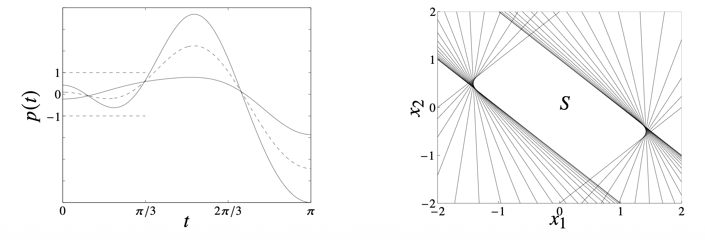
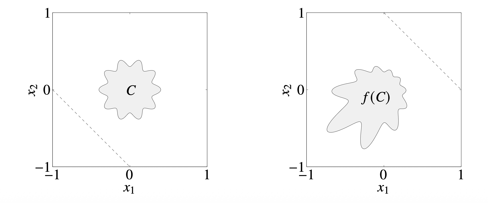

볼록 최적화(Convex Optimization) 문제를 다룰 때 가장 먼저 마주하는 난관은 “우리가 다루는 제약 조건 집합(Constraint Set)이나 목적 함수가 실제로 볼록(Convex)한가?”를 증명하는 것입니다.
임의의 집합이 볼록임을 보이기 위해 매번 정의를 사용하여 증명하는 것은 매우 번거롭고 비효율적입니다. 대신, 우리는 기본적인 볼록 집합(Simple Convex Sets)들을 알고, 이들에 대해 볼록성을 보존하는 연산(Operations that preserve convexity)을 적용하여 복잡한 집합을 구성하는 방식을 주로 사용합니다.
이번 포스트에서는 집합의 볼록성을 확인하는 방법론과, 볼록성을 깨트리지 않고 집합을 변형하거나 결합하는 다양한 수학적 연산(Calculus of sets)에 대해 다룹니다.
1. Methods for Establishing Convexity
어떤 집합 \(C\)가 볼록 집합임을 보이기 위한 방법은 크게 세 가지로 요약할 수 있습니다.
1.1. 정의(Definition) 활용
가장 원초적인 방법입니다. 집합 \(C\)의 임의의 두 원소 \(x_1, x_2\)와 \(0 \le \theta \le 1\)인 모든 \(\theta\)에 대하여 다음이 성립함을 보입니다.
\[ x_1, x_2 \in C \implies \theta x_1 + (1-\theta)x_2 \in C \]
이 방법은 단순한 집합(예: 반공간, 직육면체 등)을 다룰 때는 유용하지만, 복잡한 집합에 대해서는 계산이 매우 복잡해질 수 있어 권장되지 않습니다.
1.2. 볼록 함수(Convex Functions) 활용
집합 \(C\)를 어떤 볼록 함수의 수준 집합(Sublevel set)으로 정의하는 방법입니다. 예를 들어, 함수 \(f(x)\)가 볼록 함수일 때, \(\{x \mid f(x) \le 0\}\) 꼴의 집합은 볼록 집합이 됩니다. (이 내용은 추후 볼록 함수 파트에서 자세히 다룰 예정입니다.)
1.3. 볼록성 보존 연산(Calculus of Sets) 활용
이 방법이 실전에서 가장 강력하고 빈번하게 사용됩니다. 이미 볼록임이 알려진 간단한 집합들(Hyperplanes, Halfspaces, Norm balls 등)을 볼록성을 보존하는 연산을 통해 조합하여 집합 \(C\)를 구성하는 것입니다.
주요 연산은 다음과 같습니다.
- 교집합 (Intersection)
- 아핀 매핑 (Affine Mapping)
- 투시 매핑 (Perspective Mapping)
- 선형 분수 매핑 (Linear-Fractional Mapping)
이제 각 연산에 대해 상세히 알아보겠습니다.
2. Intersection (교집합)
가장 기본적이면서도 강력한 성질은 “볼록 집합들의 교집합은 볼록 집합”이라는 사실입니다.
2.1. 성질
개수에 상관없이(심지어 무한 개의 집합이라도), 볼록 집합들의 교집합은 항상 볼록입니다.
\[ S = \bigcap_{\alpha \in \mathcal{A}} S_\alpha, \quad \text{where } S_\alpha \text{ is convex} \implies S \text{ is convex} \]
증명 직관: \(x, y \in S\)라면, 모든 \(\alpha\)에 대해 \(x, y \in S_\alpha\)입니다. \(S_\alpha\)가 볼록이므로 \(x\)와 \(y\)를 잇는 선분도 \(S_\alpha\)에 포함됩니다. 따라서 이 선분은 모든 \(S_\alpha\)에 포함되므로, 그들의 교집합인 \(S\)에도 포함됩니다.
2.2. Example: Trigonometric Polynomial
다음과 같은 집합 \(S\)를 고려해 봅시다.
\[ S = \{ x \in \mathbb{R}^m \mid |p(t)| \le 1 \text{ for } |t| \le \pi/3 \} \]
여기서 \(p(t)\)는 다음과 같이 정의된 삼각 다항식입니다. \[ p(t) = x_1 \cos t + x_2 \cos 2t + \dots + x_m \cos mt \]
이 집합 \(S\)가 볼록임을 어떻게 보일 수 있을까요? 정의를 직접 적용하기에는 식이 복잡합니다. 하지만 교집합의 관점에서 보면 매우 간단해집니다.
특정한 \(t\)가 고정되어 있을 때, \(|p(t)| \le 1\)이라는 조건은 \(x\)에 대한 선형 부등식 두 개와 같습니다. \[ -1 \le x_1 \cos t + \dots + x_m \cos mt \le 1 \] 이는 \(x\) 공간에서 두 개의 반공간(Halfspace)의 교집합이므로, 일종의 Slab(두 평행한 평면 사이의 공간) 형태가 되며, 이는 볼록 집합입니다.
따라서 전체 집합 \(S\)는 \(|t| \le \pi/3\) 범위 내의 모든 \(t\)에 대한 Slab들의 교집합으로 표현할 수 있습니다. \[ S = \bigcap_{|t| \le \pi/3} \{ x \mid -1 \le p(t) \le 1 \} \] 볼록 집합(Slab)들의 (무한) 교집합이므로, \(S\)는 볼록 집합입니다.

3. Affine Mappings (아핀 매핑)
아핀 함수(Affine Function) \(f: \mathbb{R}^n \rightarrow \mathbb{R}^m\)은 선형 변환에 평행 이동을 더한 형태입니다. \[ f(x) = Ax + b, \quad A \in \mathbb{R}^{m \times n}, b \in \mathbb{R}^m \] 아핀 매핑은 직선을 직선으로 보내기 때문에 볼록성을 완벽하게 보존합니다.
3.1. Image and Inverse Image
- Image (상): 볼록 집합 \(S \subseteq \mathbb{R}^n\)의 아핀 변환에 의한 상 \(f(S)\)는 볼록입니다. \[ f(S) = \{ f(x) \mid x \in S \} \quad (\text{Convex}) \]
- Inverse Image (역상): 볼록 집합 \(C \subseteq \mathbb{R}^m\)의 아핀 변환에 의한 역상 \(f^{-1}(C)\)는 볼록입니다. \[ f^{-1}(C) = \{ x \in \mathbb{R}^n \mid f(x) \in C \} \quad (\text{Convex}) \]
3.2. 주요 예시 (Examples)
이 성질을 이용하면 다양한 집합의 볼록성을 쉽게 증명할 수 있습니다.
Scaling and Translation
어떤 볼록 집합 \(S\)를 확대/축소(\(a\))하거나 이동(\(b\))시킨 집합은 볼록입니다. \[ aS + b = \{ ax + b \mid x \in S \} \]
Projection (사영)
\(S \subseteq \mathbb{R}^m \times \mathbb{R}^n\)이 볼록 집합일 때, 이를 일부 좌표축으로 사영시킨 집합도 볼록입니다. \[ P = \{ x \mid (x, y) \in S \text{ for some } y \} \] 이는 선형 변환 \(f(x, y) = x\)에 의한 상(Image)이므로 볼록성이 유지됩니다.
Linear Matrix Inequality (LMI) Solution Set
선형 행렬 부등식의 해집합은 제어 이론과 최적화에서 매우 중요합니다. \[ \{ x \mid x_1 A_1 + \dots + x_m A_m \preceq B \} \] 여기서 \(A_i, B\)는 대칭 행렬(\(S^p\))이고, \(\preceq\)는 행렬의 음의 준정부호(Negative Semidefinite) 관계를 나타냅니다.
이 집합이 볼록인 이유는 다음과 같이 해석할 수 있기 때문입니다. 함수 \(f(x) = B - (x_1 A_1 + \dots + x_m A_m)\)는 \(x\)에 대한 아핀 함수입니다. 주어진 조건은 \(f(x) \succeq 0\), 즉 \(f(x)\)가 양의 준정부호 행렬(Positive Semidefinite, PSD) 집합에 속해야 한다는 것입니다. PSD Cone은 볼록 집합이므로, 볼록 집합(PSD Cone)의 아핀 함수에 의한 역상인 LMI 해집합 역시 볼록입니다.
Hyperbolic Cone
쌍곡선 제약조건(hyperbolic constraint)으로 정의된 집합 \(C\)는 다음과 같습니다.
\[ C = \{ x \in \mathbb{R}^n \mid x^T P x \le (c^T x)^2, c^T x \ge 0 \} \]
여기서 \(P \in S_+^n\) (양의 준정부호 행렬)이고 \(c \in \mathbb{R}^n\)입니다.
이 집합 \(C\)가 볼록임을 보이기 위해, 이를 이차 원뿔(Second Order Cone, SOC)의 아핀 함수에 의한 역상(inverse image)으로 해석할 수 있습니다.
유도 과정 (Derivation):
\(P \in S_+^n\)이므로, \(P = P^{1/2} P^{1/2}\)를 만족하는 행렬 제곱근(matrix square root) \(P^{1/2} \in S_+^n\)이 존재합니다. 정의된 부등식을 유클리드 노름(Euclidean norm)을 사용하여 다시 쓰면 다음과 같습니다.
\[ x^T P x = x^T P^{1/2} P^{1/2} x = \| P^{1/2} x \|_2^2 \le (c^T x)^2 \]
조건에서 \(c^T x \ge 0\)이 주어졌으므로, 양변에 제곱근을 취해도 부등호 방향은 유지됩니다.
\[ \| P^{1/2} x \|_2 \le c^T x \]
이제 \((n+1)\)차원 표준 이차 원뿔(Second Order Cone, SOC) \(\mathcal{Q}^{n+1}\)을 고려해 봅시다.
\[ \mathcal{Q}^{n+1} = \{ (u, t) \in \mathbb{R}^n \times \mathbb{R} \mid \|u\|_2 \le t \} \]
다음과 같은 아핀 매핑(affine mapping) \(f: \mathbb{R}^n \to \mathbb{R}^{n+1}\)을 정의합니다.
\[ f(x) = \begin{bmatrix} P^{1/2} \\ c^T \end{bmatrix} x = \begin{bmatrix} P^{1/2} x \\ c^T x \end{bmatrix} \]
그러면 \(x \in C\)이기 위한 조건은 \(f(x) \in \mathcal{Q}^{n+1}\)과 정확히 동치(equivalent)입니다.
\[ \| P^{1/2} x \|_2 \le c^T x \iff \left( P^{1/2} x, c^T x \right) \in \mathcal{Q}^{n+1} \]
따라서 집합 \(C\)는 아핀 매핑 \(f\)에 대한 볼록 원뿔 \(\mathcal{Q}^{n+1}\)의 역상(inverse image)으로 표현됩니다.
\[ C = f^{-1}(\mathcal{Q}^{n+1}) = \{ x \mid f(x) \in \mathcal{Q}^{n+1} \} \]
아핀 매핑에 의한 볼록 집합의 역상은 볼록 집합이므로, \(C\)는 볼록 집합입니다.
4. Perspective Function (투시 함수)
투시 함수 \(P: \mathbb{R}^{n+1} \rightarrow \mathbb{R}^n\)은 벡터의 마지막 성분으로 나머지 성분들을 나누는 연산입니다. 핀홀 카메라 모델에서 3차원 물체를 2차원 평면에 투영하는 것과 같은 원리입니다.
4.1. 정의
\[ P(z, t) = \frac{z}{t}, \quad \text{dom } P = \{ (z, t) \mid t > 0 \} \] 정의역은 마지막 성분 \(t\)가 양수인 반공간으로 제한됩니다.
4.2. 볼록성 보존
투시 함수는 볼록성을 보존합니다. * Image: 볼록 집합 \(C \subseteq \text{dom } P\)의 투시 변환 상 \(P(C)\)는 볼록입니다. * Inverse Image: 볼록 집합 \(C \subseteq \mathbb{R}^n\)의 투시 변환 역상 \(P^{-1}(C)\)는 볼록입니다. \[ P^{-1}(C) = \{ (z, t) \in \mathbb{R}^{n+1} \mid z/t \in C, t > 0 \} \]
5. Linear-Fractional Function (선형 분수 함수)
선형 분수 함수(또는 Projective Mapping)는 아핀 함수와 투시 함수를 결합한 형태입니다.
5.1. 정의
\[ f(x) = \frac{Ax + b}{c^T x + d}, \quad \text{dom } f = \{ x \mid c^T x + d > 0 \} \] 이 함수는 다음과 같은 과정을 거쳐 구성된 것으로 이해할 수 있습니다. 1. Affine Map: \(x \to \begin{bmatrix} Ax + b \\ c^T x + d \end{bmatrix}\) 2. Perspective Map: 위 벡터를 마지막 성분(\(c^T x + d\))으로 나눔.
따라서 아핀 매핑과 투시 매핑이 모두 볼록성을 보존하므로, 선형 분수 함수 역시 볼록성을 보존합니다.
5.2. Example Visualization
어떤 임의의 볼록 집합 \(C\)가 선형 분수 함수 \(f(x)\)를 통과하면 모양은 왜곡되지만, 볼록한 성질(모든 두 점을 잇는 선분이 집합 내부에 존재함)은 그대로 유지됩니다.
\[ f(x) = \frac{1}{x_1 + x_2 + 1} x \] 위와 같은 함수를 적용했을 때의 예시를 살펴봅시다.

Note: 위 그림 예시는 선형 분수 변환이 직선을 직선(또는 선분)으로 매핑하여 볼록성을 보존한다는 기하학적 직관을 제공합니다. 분모 \(c^T x + d\)의 값이 0에 가까워질수록 점들은 무한대로 발산하는 경향을 보이며 집합이 크게 늘어나는 형태를 띱니다.